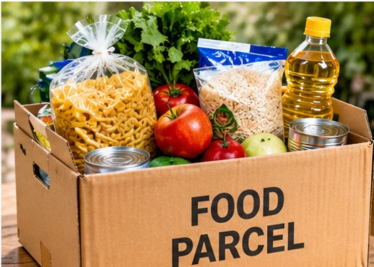
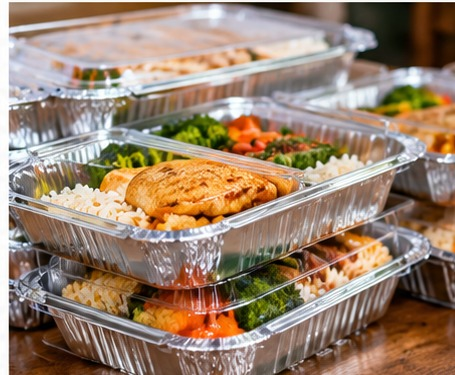
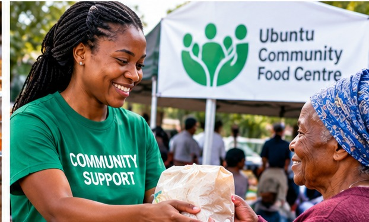
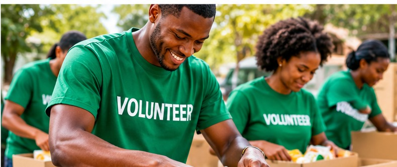
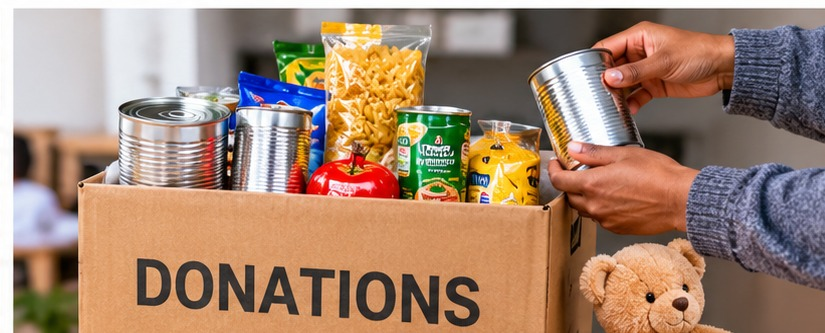

Food Parcels

We provide essential food parcels to families experiencing food insecurity.
Enquire about food assistanceSupporting families and building stronger communities
We provide different services to support food-insecure families and individuals in South Africa. Our aim is to help people access food and receive community support.
All services are displayed.
No services were found. Please try another search.

We provide essential food parcels to families experiencing food insecurity.
Enquire about food assistance
We support people in need by providing prepared meals to help address hunger in the community.
Enquire about prepared meals
We encourage community support programmes that help families and individuals facing difficult situations.
Enquire about community support
Community members can offer their time and skills to assist with our activities.
Contact us to volunteer
Donations of food, money and useful resources can help us support families in need.
Contact us about donations